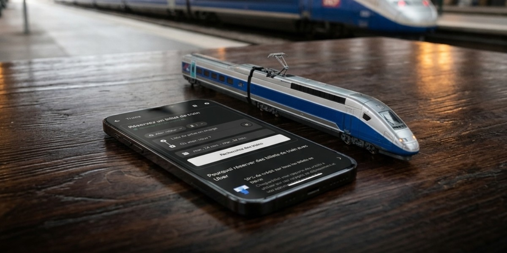

Geekotidien · Édition du 25 novembre 2026
Uber Trains en France
Uber prépare un service de vente de billets de train en France

Uber prépare le lancement d'« Uber Trains » en France, accessible à partir du 30 novembre. Le service permettra d'acheter des billets directement dans l'application Uber.
Il regroupera les offres de SNCF Voyageurs (TGV Inoui, Ouigo, TER, Intercités), Trenitalia, Eurostar, Lyria et Renfe. Uber a un accord commercial avec Omio.
Pour lancer le service, Uber reversera 10 % du montant de chaque réservation éligible en crédits Uber : un billet de 50 euros donne 5 euros de crédits. Le service existe déjà au Royaume-Uni (depuis 2022) et en Espagne (depuis 2024).
SNCF Connect est présenté comme le leader de la vente en ligne de billets de train en France, devant Trainline. SNCF Connect ne vend pas les billets Trenitalia.
L'article repose sur une seule source, l'annonce d'Uber, à travers son directeur général en France, Pablo del Olmo González. Le nombre d'utilisateurs visés et les conditions détaillées de l'accord avec Omio ne sont pas précisés.
Le + : Uber Trains regroupe les offres de plusieurs opérateurs, dont SNCF Voyageurs, et reverse 10 % en crédits Uber.